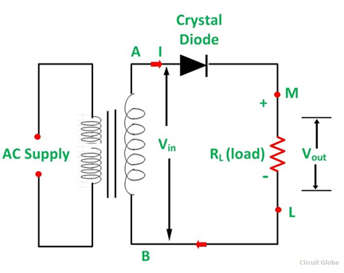
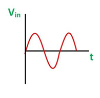
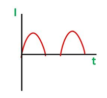
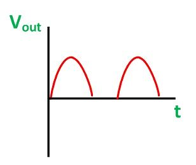
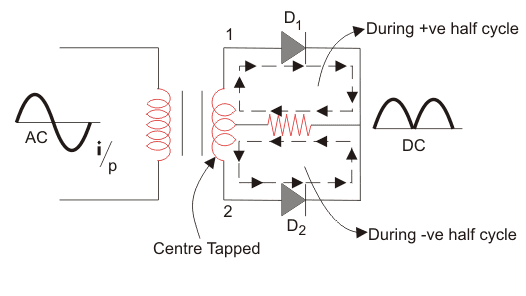
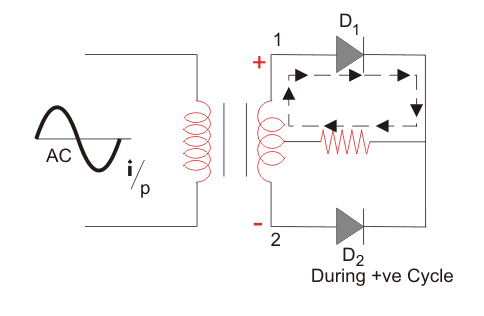

A rectifier is an electrical device that converts alternating current (AC) to direct current (DC) and this process is known as rectification.
Rectifiers are of two types that are half and full wave rectifiers.
• A half-wave rectifier is a circuit that allows only one half-cycle of the AC voltage waveform to be applied to the load, resulting in one non-alternating polarity across it. The resulting DC delivered to the load “pulsates” significantly.
• A full-wave rectifier is a circuit that converts both half-cycles of the AC voltage waveform to an unbroken series of voltage pulses of the same polarity. The resulting DC delivered to the load doesn’t “pulsate” as much.
Operation of Half Wave Rectifier:

-
When AC supply is switched ON the alternating voltage (Vin) shown in the figure on the right appears across the terminal AB at the secondary winding.

-
During the positive half cycle, the terminal A is positive with respect to B and the crystal diode is forward biased.
Therefore, it conducts and current flows through the load resistor RL. This current varies in magnitude as shown in the wave diagram shown on the right.

-
Thus, a positive half cycle of the output voltage (Vout = iRL) appears across the load resistor RL shown in the figure on the right.

Working of Centre-tapped Full Wave Rectifier

-
We apply an AC voltage to the input transformer. During the positive half-cycle of the AC voltage,
terminal 1 will be positive, centre-tap will be at zero potential and terminal 2 will be negative potential.
This will lead to forward bias in diode D1 and cause current to flow through it. During this time, diode D2 is in reverse bias and will block current through it.
-
During the positive half cycle, the terminal A is positive with respect to B and the crystal diode is forward biased.
Th9erefore, it conducts and current flows through the load resistor RL.
This current varies in magnitude as shown in the wave diagram shown on the right.
During the negative half-cycle of the input AC voltage, terminal 2 will become positive with relative to terminal 2 and centre-tap.
This will lead to forward bias in diode D2 and cause current to flow through it.
During this time, diode D1 is in reverse bias and will block current through it.
During the positive cycle, diode D1 conducts and during negative cycle diode D2 conducts and during positive cycle.
As a result, both half-cycles are allowed to pass through. The average output DC voltage here is almost twice of the DC output voltage of a half-wave rectifier.

Measurment of Form Factor:
-
Using CRO -
The Form Factor for the full rectified sine wave is given as:
((V_peak)√2 )/(2*(V_peak))/π) = 1.11
The Form Factor for the half rectified sine wave is given as:
((V_peak)/2 )/((V_peak)/π) = 1.57
Using Multimeter -
If the form factor is to be calculated using an AC + DC True multimeter, peak value of the voltage will not be known.
In this case multimeter readings are used.
Multimeter DC reading:
For most multimeters this is the average value of the signal.
Multimeter AC reading:
For most multimeters this is the standard deviation value of the signal.
In case of signals that have equally distributed positive and negative parts over a period (eg. sine wave),
DC reading on the multimeter will be zero because average value over a period will be zero and the AC reading will show
the true RMS value of given input signal.
But in case the input signal has a finite DC component(eg. as in the case of rectified waves) then the standard deviation value and RMS value
are no longer the same since there is a finite non-zero mean that is the DC component associated with the signal. This DC component has a value equal to
the DC reading on the multimeter.
In this case the RMS value is given by-
Vrms = √((AC reading)^2 + (DC reading)^2)
for calculation of Form Factor the formula used in case of signals that do not have equally distributed positive and negative parts over a period is-
Form Factor = [√((AC reading)^2 + (DC reading)^2)]/ DC reading